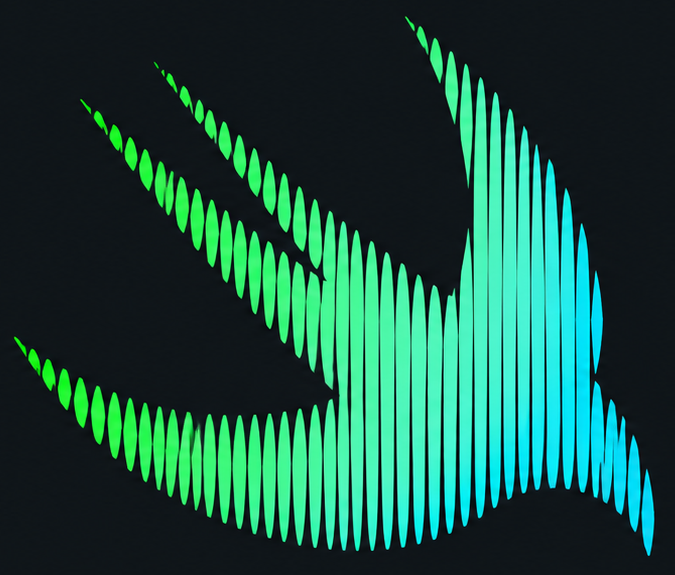
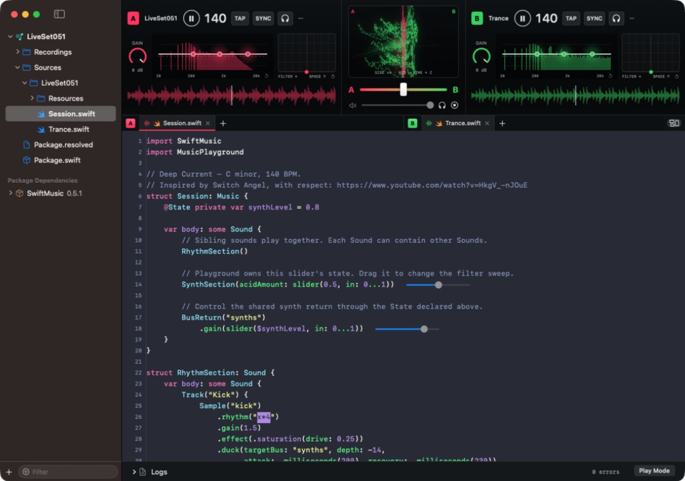

{kind=link}
Compose in Swift
Layer nested sounds, rhythms and effects with SwiftMusic’s declarative API.

MusicPlaygroundA native macOS playground
for live music with Swift.

02 / Made to be played
Build sounds from sounds.
Turn patterns into rhythms.
Keep shaping them while they play.
// Compose sounds together.
var body: some Sound {
RhythmSection()
// Shape the filter live.
SynthSection(
acidAmount: slider(0.5, in: 0...1)
)
BusReturn("synths")
.gain(slider($synthLevel, in: 0...1))
}Layer nested sounds, rhythms and effects with SwiftMusic’s declarative API.
Mix independent sessions. Tap the tempo, sync the beat and scratch the waveform.
Waveforms, spectrum EQ and a shared vectorscope make the mix visible.
03 / Feel the performance
01 — Scratch
Move two or three fingers over a deck’s waveform to scratch forward or backward. Hear it even while the deck is paused.
Lift your fingers to return to playback, or to silence if paused.
Explore trackpad Play Mode02 — Headphone cue
Preview either deck in your headphones before bringing it into the main mix. Set the next moment while the audience hears the current one.
Select a headphone output different from the main output, then enable the deck’s headphone button.
04 / Your first session
Build from source. Create a project. Press play.
macOS 15+ · Swift 6.4
Xcode command-line tools
git clone --branch 0.5.1 https://github.com/1amageek/MusicPlaygournd.git
cd MusicPlaygournd
./Scripts/build-app.sh
open .build/MusicPlaygournd.appThis preview is built locally from source. Keep your Swift compiler and SDK installed. Initial package resolution and compilation can take longer; progress appears in the sidebar.
Read the installation guide